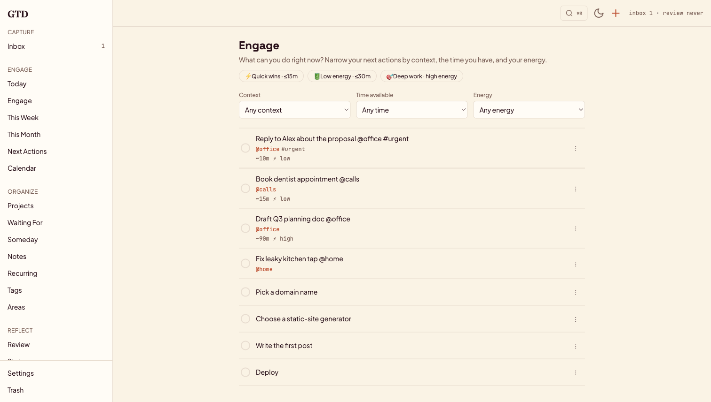
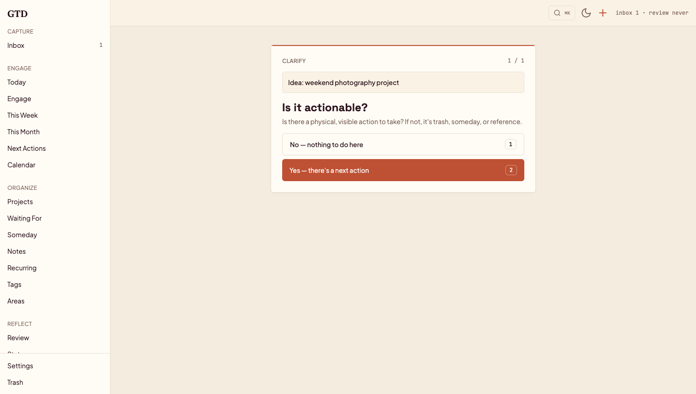
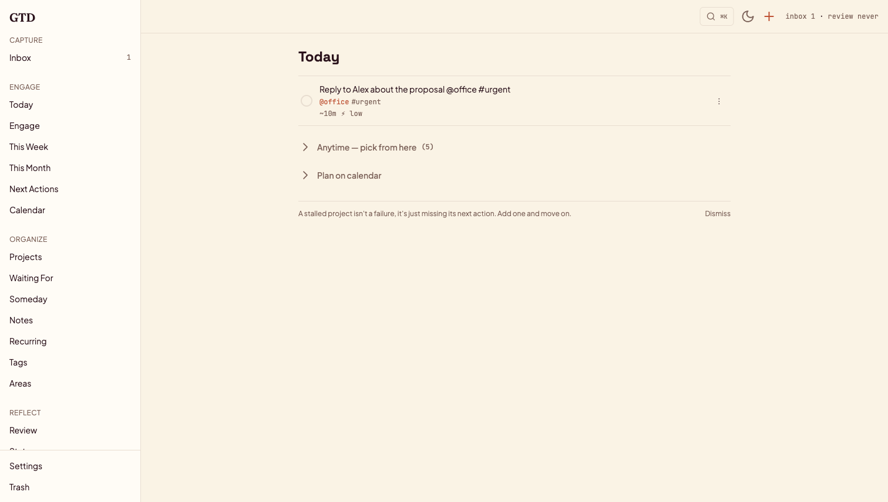
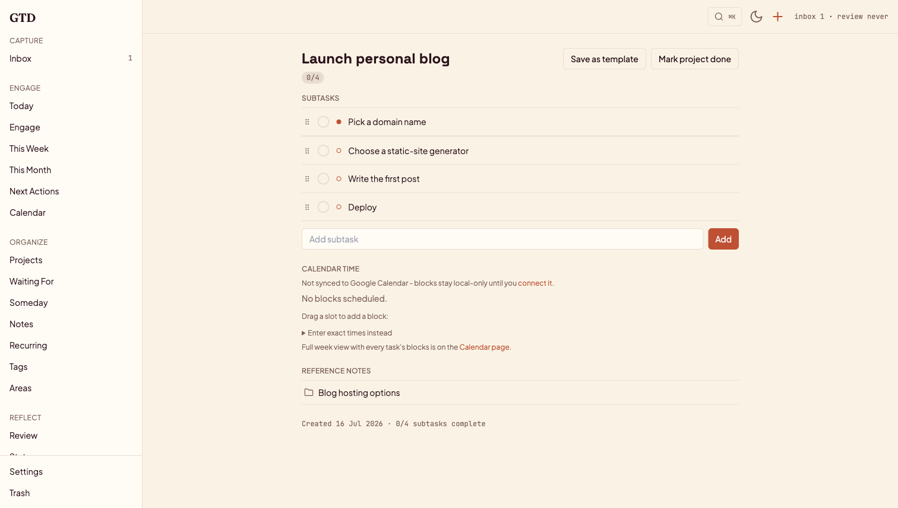

Self-hosted · Single-user · Open source
A calm, self-hosted Getting Things Done app — capture what's on your mind, clarify it, and always know what to do next.
capture → clarify → organize → reflect → engage

The app is organized around David Allen's workflow — not a generic to-do list, but the actual method.
Get everything out of your head into a trusted inbox — web, a quick-capture modal, an iOS Shortcut, or offline (it syncs later).
A guided wizard walks each item through the GTD decision tree with keyboard shortcuts. Is it actionable? A project? Reference?
Projects, contexts, horizons, areas, and reusable templates. The next action is always resolved for you.
Guided weekly & monthly reviews, an Eisenhower triage board, Big-3 stars, and a carry-over gate that keeps you honest.
"What can I do right now?" — filter your next actions by context × available time × energy, with one-tap presets.
Warm, keyboard-friendly, and fast — HTMX under the hood, no single-page-app bloat.



Batteries included; integrations optional. Leave Google Calendar and ntfy unconfigured and it runs fully local.
Drag any task — or today's list — onto a calendar to block time. Optional two-way Google Calendar sync.
Type "Call plumber tomorrow 3pm" and it parses the date and pre-fills the due date.
A drag-only triage board that lives only inside the review — priority stays a practice, not permanent metadata.
Markdown notes with Postgres full-text search, attachments, and links to the work they support.
Human-readable recurrence rules that materialize real task instances — overdue ones pile up instead of vanishing.
⌘K / Ctrl-K to jump anywhere or capture instantly. Built for people who live on the keyboard.
Installable as an app, with optional ntfy push for missed blocks, review reminders, and follow-ups.
Capturing must never fail — offline captures queue in a service worker and sync when you reconnect.
See throughput, inbox-zero streaks, and review cadence — gentle signal, not a productivity guilt trip.
You host it, you own the data. Docker is the fastest path; a native setup and full VM deploy guide are in the repo.
Then open localhost:8000 and log in as demo / demo.
One instance, one person. GTD is deliberately single-tenant — there's no per-user data separation, so run your own copy rather than sharing one. See the repo's security notes before exposing it to the internet.